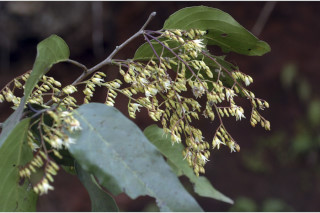
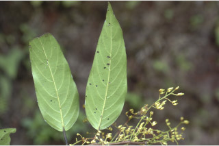
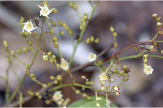
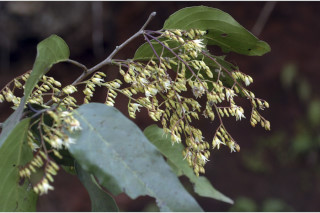
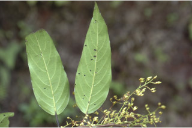
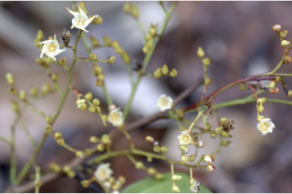

Trees, about 30 m tall.
30 ಮೀ. ಎತ್ತರದವರೆಗಿನ ಮರಗಳು.
ഏതാണ്ട് 20 മീറ്റര് വരെ ഉയരത്തില് വളരുന്ന മരങ്ങള്.
மரம் 30 மீ. உயரம் வரை வளரக்கூடியது
Bark pale brown, flaky; blaze cream.
ತೊಗಟೆ ಚಕ್ಕೆ ರೂಪದಲ್ಲಿದ್ದು ಕಂದು ಬಣ್ಣ ಹೊಂದಿರುತ್ತದೆ ;ಕಚ್ಚು ಮಾಡಿದ ಜಾಗ ಕೆನೆ ಬಣ್ಣದಲ್ಲಿರುತ್ತದೆ.
അടര്ന്ന്പോകുന്നതും, ഇളം തവിട്ടുനിറത്തിലുളളതുമായ പുറംതൊലി; വെട്ട്പാടിന് ക്രീം നിറമാണ്.
மரத்தின் பட்டை வெளிறிய அரக்கு நிறம், வெடிப்புகளுடையது; பட்டையின் உட்புறம் கிரீம் நிறமுடையது
Branchlets terete, glabrous.
ಕಿರುಕೊಂಬೆಗಳು ದುಂಡಾಗಿದ್ದು,ರೋಮರಹಿತವಾಗಿರುತ್ತವೆ.
ഉരുണ്ടതും, അരോമിലവുമായ ഉപശാഖകള്.
சிறுநுனிக்கிளைகள், குறுக்குவெட்டுத் தோற்றத்தில் வளையமானது, உரோமங்களற்றது.
Leaves simple, alternate, spiral; petiole 1.5-2 cm long, glabrous; lamina 10-17 x 2-9 cm, ovate-lanceolate, apex acuminate, base rounded, sometimes subpeltate, coriaceous, glabrous; midrib flat above; secondary_nerves ca. 8 pairs, domatia at the axils of secondary_nerves beneath; tertiary_nerves closely_obliquely_percurrent.
ಎಲೆಗಳು ಸರಳವಾಗಿದ್ದು, ಪರ್ಯಾಯ ಹಾಗೂ ಸುತ್ತು ಜೋಡನಾ ವ್ಯವಸ್ಥೆಯಲ್ಲಿರುತ್ತವೆ ;ತೊಟ್ಟುಗಳು ಒಂದರಿಂದ ಎರಡು ಸೆಂ.ಮೀ.ಉದ್ದವಿದ್ದು, ರೋಮರಹಿತವಾಗಿರುತ್ತವೆ;ಪತ್ರಗಳು 10-17 X 2-9 ಸೆಂ.ಮೀ ಗಾತ್ರ,ಅಂಡ-ಭರ್ಜಿಯ ಆಕಾರ ಕ್ರಮೇಣ ಚೂಪಾಗುವ ತುದಿ,ಬುಡ ದುಂಡಾಗಿದ್ದು, ಕೆಲವುವೇಳೆ ಎಲೆ ಪತ್ರದ ತಳಭಾಗದ ಮಧ್ಯದಲ್ಲಿ ಎಲೆತೊಟ್ಟು ಇರುತ್ತದೆ;ಪತ್ರದ ಮೇಲ್ಮೈ ತೊಗಲನ್ನೋಲುವ ರೀತಿಯದಾಗಿದ್ದು ರೋಮರಹಿತವಾಗಿರುತ್ತವೆ; ಮಧ್ಯನಾಳ ಪತ್ರದ ಮೇಲ್ಭಾಗದಲ್ಲಿ ಚಪ್ಪಟೆಯಾಗಿರುತ್ತದೆ;ಎರಡನೇ ದರ್ಜೆಯ ನಾಳಗಳು ಅಂದಾಜು 8 ಜೋಡಿಗಳಿದ್ದು ಅಕ್ಷಸ್ಥಸಹಜೀವಿ ಗೂಡುಗಳು ತಳಭಾಗದ ಎರಡನೇ ದರ್ಜೆಯ ನಾಳಗಳ ಅಕ್ಷಾಕಂಕುಳಿನಲ್ಲಿರುತ್ತವೆ; ಮೂರನೇ ದರ್ಜೆಯ ನಾಳಗಳು ಓರೆಯಾಗಿದ್ದು,ಕಡಿಮೆ ಅಂತರ ಹೊಂದಿದ್ದು, ಎಲೆ ದಿಂಡಿಗೆ ಅಡ್ಡವಾಗಿ ಕೂಡುವಂತವು
ലഘുവായ ഇലകള്, ഏകാന്തരമായി, സര്പ്പിളമായി ക്രമീകരിച്ചിരിക്കുന്നു; ഇലഞെട്ടിന് 1.5 മുതല് 2 സെ.മീ വരെ നീളവും അരോമിലവുമാണ്; പത്രഫലകത്തിന് 10 സെ.മീ മുതല് 17 സെ.മീ വരെ നീളവും 2 സെ.മീ മുതല് 9 സെ.മീ വരെ വീതിയുമാണ്, അണ്ഡാകാര-കുന്താകൃതിയാണ്, ദീര്ഘ പത്രാഗ്രം, പത്രാധാരം വൃത്താകാരത്തിലാണ്, ചിലപ്പോള് ഉപപെല്റ്റേറ്റ് ആണ്, ചര്മ്മില പ്രകൃതം, അരോമിലം; മുഖ്യസിര മുകളില് പരന്നതാണ്; ദ്വിതീയ ഞരമ്പുകള് ഏതാണ്ട് 8 ജോഡികള്, ദ്വീതീയ ഞരമ്പുകളുടെ കക്ഷങ്ങളില്, കീഴ്ഭാഗത്തായി ഡോമേഷ്യ ഉണ്ട്; ത്രിതീയ ഞരമ്പുകള് ചരിഞ്ഞ്, അടുത്ത പെര്കറന്റ് വിധത്തിലാണ്.
இலைகள் தனித்தவை, மாற்றுஅடுக்கமானவை, சுழல் போன்ற அமைப்பு கொண்டது; இலைக்காம்பு 1.5-2 செ.மீ., நீளமானது, உரோமங்களற்றது; இலை அலகு 10-17 X 2-9 செ.மீ. முட்டை-ஈட்டிவடிவம், அலகின் நுனி கூரியது, அலகின் தளம் வட்டமானது, சிலவற்றில் இலையின் பின்புறத்தில் காம்பு இணைந்தது (சப்பெல்டேட்), கோரியேசியஸ், உரோமங்களற்றது; மையநரம்பு மேற்பரப்பில் அலகின் பரப்பிற்கு சமமானது; இரண்டாம் நிலை நரம்புகள் 8 ஜோடிகள், டொமேஸ்சியா கீழ்பரப்பில் இரண்டாம் நிலை நரம்பு கோணங்களில் காணப்படும்; மூன்றாம் நிலை நரம்புகள் நெருக்கமான பெர்க்கரண்ட்.
Inflorescence axillary panicles, glabrous; flowers cream with petals twisted.
ಪುಷ್ಪಮಂಜರಿಗಳು ಅಕ್ಷಾಕಂಕುಳಿನಲ್ಲಿರುವ ಪುನರಾವೃತ್ತಿಯಾಗಿ ಕವಲೊಡೆಯುವ ಮಾದರಿಯವು; ಪುಷ್ಪಮಂಜರಿಗಳು ರೋಮರಹಿತವಾಗಿರುತ್ತವೆ;ಹೂಗಳು ತಿರುಚಿದ ದಳಗಳನ್ನು ಹೊಂದಿದ್ದು ಕೆನೆ ಬಣ್ಣವನ್ನು ಹೊಂದಿರುತ್ತವೆ.
പൂങ്കുലകള്, അരോമിലമായ, കക്ഷീയ പാനികിളുകളാണ്; ദളങ്ങള് പിരിഞ്ഞിരിക്കുന്ന, ക്രീംനിറത്തിലുളള പൂക്കള്.
மஞ்சரி இலைக்கோணங்களில் காணப்படும் பேனிக்கிள், உரோமங்களற்றது; மலர்களில் கிரீம் நிறம், இதழ்கள் திருகியது.
Nut, 1.2-1.5 cm long, ovoid; calyx_accrescent with two enlarged lobes; seed 1.
ಕಾಯಿಗಳು ಕರಟ ಮಾದರಿಯಲ್ಲಿದ್ದು 1.2 ರಿಂದ 1.5 ಸೆಂ.ಮೀ. ಉದ್ದವಿದ್ದು ಅಂಡಾಕಾರದಲ್ಲಿರುತ್ತವೆ; ಪುಷ್ಪಪಾತ್ರೆ ವೃದ್ಧಿಸಿದ್ದು 2 ದೊಡ್ಡದಾದ ಹಾಲೆಗಳ ಸಮೇತವಾಗಿರುತ್ತದೆ; ಹಾಗೂ ಒಂದು ಬೀಜವನ್ನು ಒಳಗೊಂಡಿರುತ್ತವೆ.
രണ്ട് വലിയ കര്ണ്ണങ്ങളോടുകൂടിയ, വീര്ത്ത വിദളങ്ങളുളള; കായ 1.2 സെ.മീ മുതല് 1.5 സെ.മീ വരെ നീളമുളള അണ്ഡാകാരത്തിലുളള നട്ട് ആണ്; ഒറ്റ വിത്തുമാത്രം.
உலர்கனி (நட்) 1.2-1.5 செ.மீ. நீளமானது, முட்டை வடிவமுடையது; புல்லி இதழ்கள் நிரந்தரமானவை மற்றும் இரண்டு பெரிய புல்லி இதழ்களை கொண்டது; ஒரு விதை கொண்டது.


 




